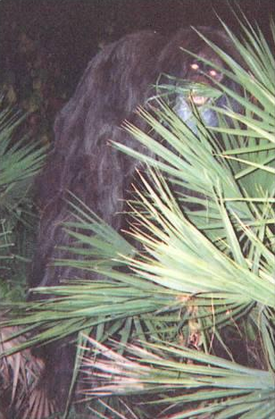

We are Skunkape Militia
Skunkape Militia is a postmodern experimental indie rock group that aims to bring the worlds attention to the Florida Skunkape.
 There he is, that sneaky ape.Band members include Jake Edwards on didgeridoo and synthesizer, Eddie Gilces on bass, "E" Ventura on turntable, and Chris Gati as vocals. We formed the band in 2006 despite not knowing how to play any of our chosen instruments (or how to sing... lessons can't even help Chris). Some said we were crazy, others thought we were brilliant. We agree with the former, and we like it.
We actually haven't seen "E" for a while. We hope he's okay. We have a rare photo of him though, so if you see him, let us know.
As a gift to you for visiting our site, we'd like to give you an exclusive listen to our latest hit song "Silence". Enjoy!